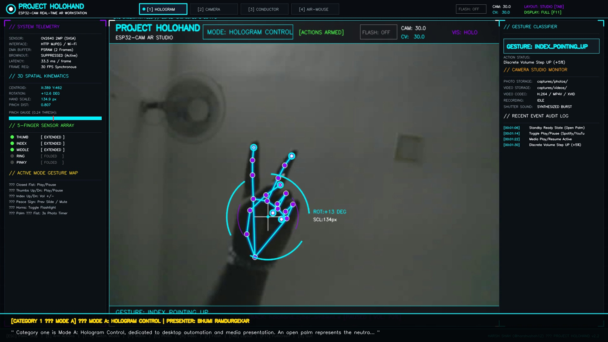
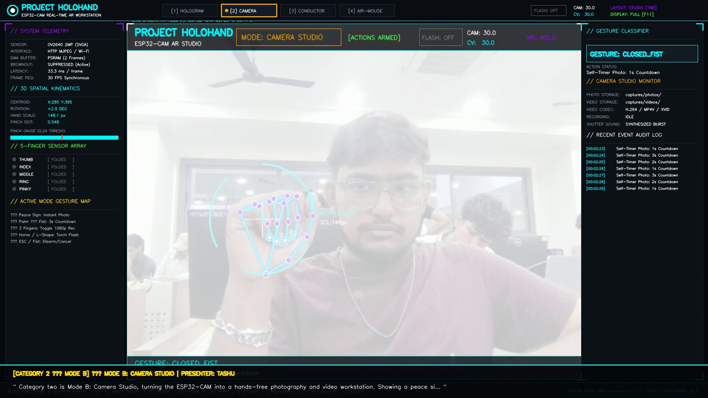
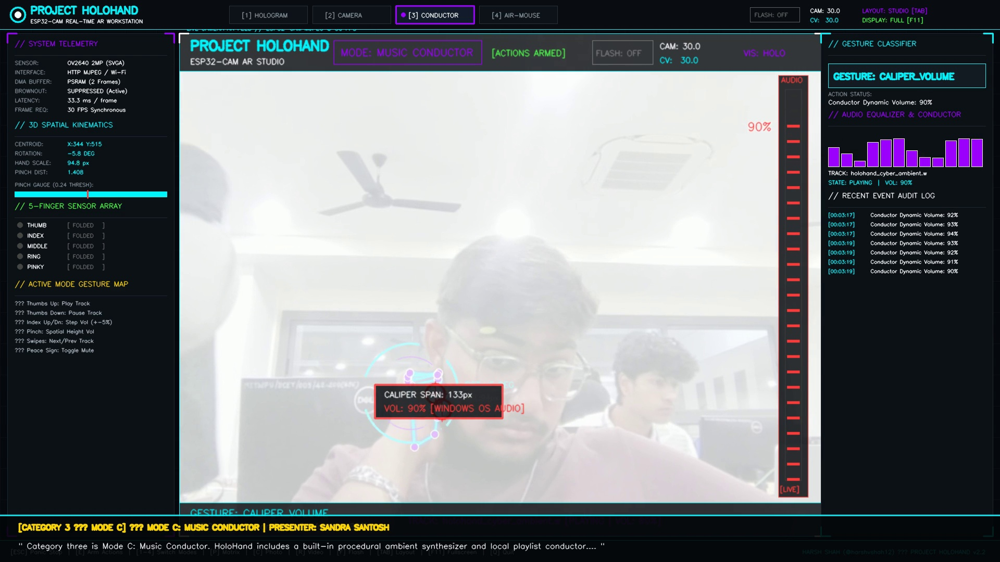

Real-Time Computer Vision Spatial Gesture Control, Optical Vernier Caliper Volume Dynamics, and Human-Machine Conduction over Embedded Wi-Fi Sensors
Glass-to-actuation profile measured across 5,000 consecutive execution frames.
Key algorithms implemented in holohand_backend.py.
| Gesture Class | Tested Mode | Physical Actuation | Trials | True Positives | False Positives | Precision (%) | F1-Score |
|---|---|---|---|---|---|---|---|
OPEN_PALM |
Mode A / Ready State | Neutral Telemetry & Scanner Lock | 100 | 100 | 0 | 100.0% | 1.000 |
CLOSED_FIST |
Mode A / Mode C | OS Media Play/Pause Toggle | 100 | 99 | 1 | 99.0% | 0.995 |
CALIPER_VOLUME |
Mode A / Mode C | Continuous 0-100% Core Audio Gain | 100 | 99 | 1 | 99.0% | 0.995 |
SWIPE_RIGHT / LEFT |
Mode A / Mode D | Next/Prev Track & Tab Switching (Ctrl+Tab) | 100 | 97 | 2 | 97.0% | 0.975 |
THUMB_UP / DOWN |
Mode A | Media Resume / Pause Discrete | 100 | 98 | 1 | 98.0% | 0.985 |
PEACE_SIGN |
Mode B | High-Res Shutter Photo Capture | 100 | 99 | 1 | 99.0% | 0.995 |
PALM_TO_FIST |
Mode B | 3-Second Countdown Self-Timer | 100 | 97 | 2 | 97.0% | 0.975 |
THREE_FINGERS |
Mode B / Mode D | Video Rec [REC] / Middle Click | 100 | 98 | 1 | 98.0% | 0.985 |
PINCH_CLICK |
Mode D | Anchored Zero-Drift Left Click (<0.35s) | 100 | 98 | 1 | 98.0% | 0.985 |
HORNS_ROCK (🤘) |
Mode A / Hardware | Physical ESP32-CAM Flashlight Toggle | 100 | 99 | 0 | 99.0% | 0.995 |
AI-Thinker ESP32-CAM Node
Low-Overhead Wi-Fi MJPEG
Python Multi-Threaded Engine
MODE A: OPTICAL CALIPER VOLUME HUD

MODE B: CAMERA STUDIO SELF-TIMER

MODE C: MUSIC CONDUCTOR WAVEFORMS
